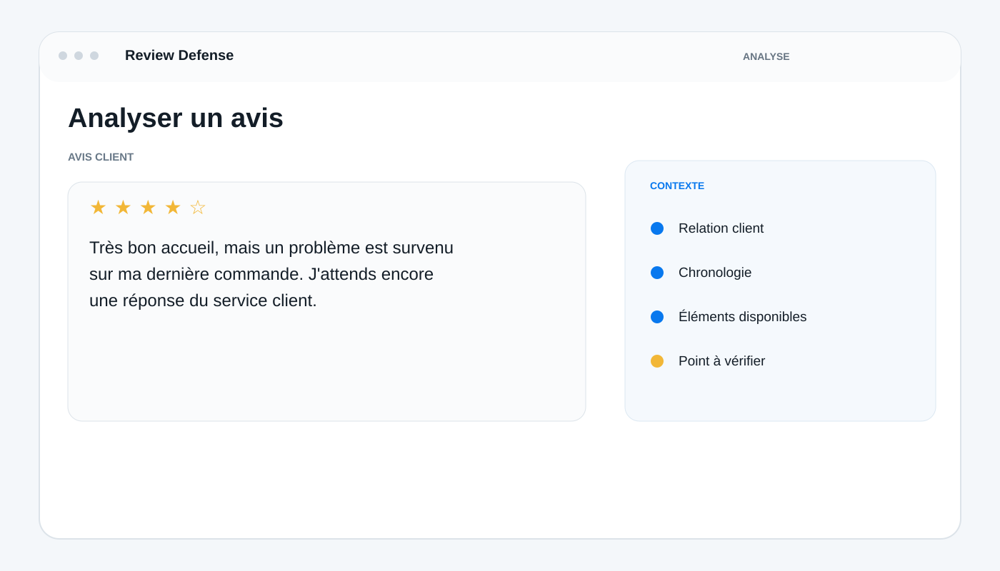
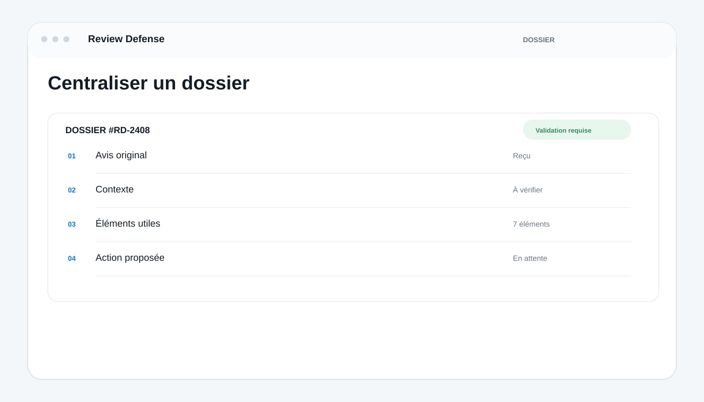

Identités de démonstration
Comprendre un avis avant de décider
Utilisez Review Defense pour comprendre un avis avant d’agir, rassembler son contexte, structurer les éléments utiles, préparer une réponse et suivre chaque situation depuis un espace centralisé. −
Décrivez simplement l’avis ou la situation que vous souhaitez examiner. Review Defense organise les informations disponibles pour établir un premier contexte de travail et vous aider à identifier ce qui mérite d’être vérifié.
Un espace pour analyser vos avis et préparer vos décisions +
Review Defense vous aide à préparer les étapes utiles, à structurer les informations et à formuler les prochaines actions possibles. Les décisions importantes restent soumises à votre examen et à votre validation.
Conservez le contexte de chaque dossier +
Retrouvez les informations utiles, les éléments du dossier et les étapes déjà traitées pour conserver une vision complète de la situation et éviter de repartir de zéro.
Centralisez avis, éléments, preuves et dossiers +
Regroupez l’avis, son contexte, les éléments disponibles, les propositions, les validations et le suivi dans un même espace afin de garder une lecture claire de chaque dossier.

Sécurisé et sous votre contrôle
Vos informations restent sous votre contrôle
Retrouvez les informations utiles dans votre espace et gardez la maîtrise des informations, des validations et des décisions prises sur chaque dossier.
Validez les actions avant leur exécution
Examinez ce qui est proposé, corrigez si nécessaire, puis validez explicitement les actions importantes avant leur exécution, selon le parcours prévu par le produit.
Que peut faire Review Defense pour vous ?
Review Defense peut analyser les avis, structurer leur contexte, organiser les éléments utiles d’un dossier, préparer des réponses et vous aider à suivre chaque situation depuis un espace centralisé. L’objectif est de vous faire gagner du temps sans retirer la décision de vos mains.
Que peut faire Review Defense pour vous ?
Il rassemble les informations utiles, structure le dossier et vous aide à distinguer les éléments déjà disponibles, ceux qui doivent encore être vérifiés et ceux qui peuvent servir à préparer la suite.
Comment fonctionne Review Defense ?
Le parcours relie analyse, contexte, dossier, proposition, validation et suivi afin de garder une vision claire de chaque situation, de son historique et des décisions prises.
Combien coûte Review Defense ?
Les tarifs et les modalités disponibles sont présentés sur la page Tarifss.
Review Defense est-il sécurisé ?
Les actions importantes restent présentées pour examen et validation selon le parcours prévu. Consultez les informations de sécurité et de confidentialité pour les détails applicables.
Puis-je continuer à suivre mes avis après avoir quitté le site ?
Les informations utiles au dossier et à son suivi sont organisées dans l’espace prévu à cet effet, selon les fonctionnalités disponibles.
Review Defense répond-il automatiquement aux avis ?
Review Defense aide à analyser la situation et à préparer une réponse cohérente avec le contexte du dossier. Vous conservez la possibilité de relire, modifier et valider le contenu avant toute publication ou action importante.
Que se passe-t-il si l’avis est fondé ?
L’outil sert d’abord à comprendre et documenter la situation. Un avis négatif n’est pas considéré comme problématique simplement parce qu’il est négatif : son contenu, son contexte et les éléments disponibles doivent être examinés avant de décider de la suite.
Review Defense garantit-il la suppression d’un avis ?
Non. Review Defense ne garantit pas la suppression d’un avis. Le service aide à analyser une situation, à qualifier les éléments disponibles et à préparer un dossier au regard des règles applicables de la plateforme. La décision finale appartient à la plateforme concernée.
Review Defense
Comprendre la situation avant de préparer la suite
Commencez par les informations disponibles, structurez le contexte et identifiez les éléments qui méritent votre attention.

Review Defense
Un dossier clair pour garder le fil
Regroupez l’avis, son contexte et les éléments disponibles pour comprendre ce qui a été analysé, préparé et validé.
L’expérience Review Defense
Une interface claire pour analyser vos avis, comprendre les situations et préparer vos actions plus rapidement.
Analysez le contenu d’un avis et identifiez les informations qui méritent d’être examinées.
Préparez ensuite une réponse adaptée à la situation, avec les éléments utiles du dossier et votre validation avant toute action importante.
Identités de démonstration
Review Defense
Commencez par un avis, pas par une supposition
Analysez une situation, rassemblez les éléments utiles, préparez la suite et gardez la décision finale sur les actions importantes. Review Defense vous accompagne dans la préparation du dossier sans présenter la suppression d’un avis comme un résultat garanti.
Analyser un avis9:41 ● ● ▪
Review Defense
Analyse terminée : les éléments utiles ont été structurés.
Une réponse peut être préparée à partir du dossier. Votre validation reste nécessaire avant une action importante.
Décrivez un avis… ↑